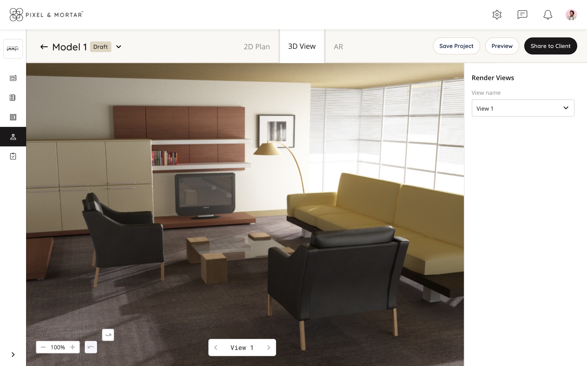
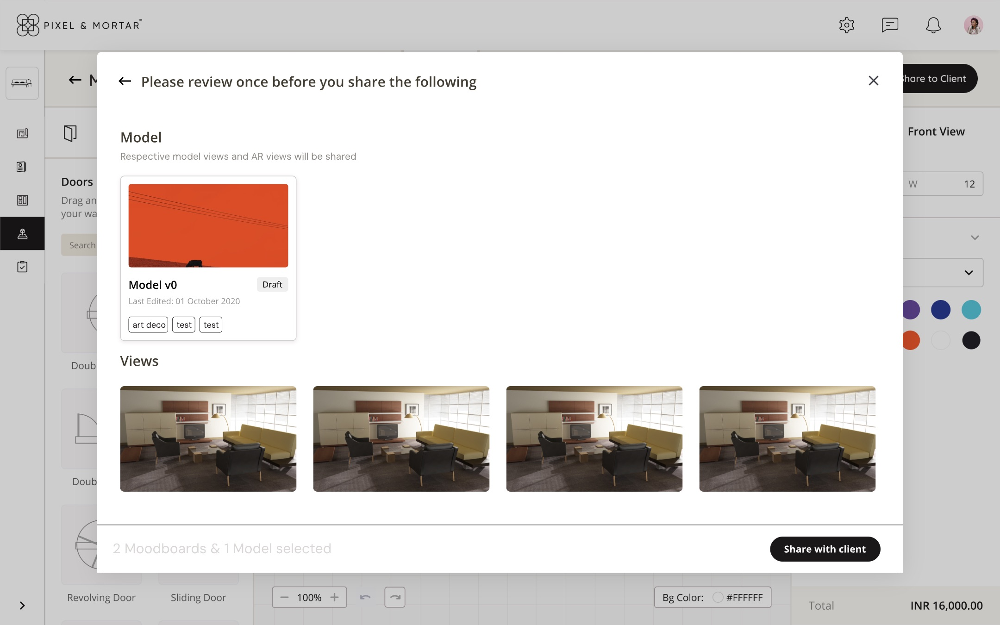

A 3D editor for people who don't do 3D
Pixel & Mortar's designers already had the client brief, the moodboard and the product list in their platform. They didn't have a way to put them in a room. At XR Labs we designed the P&M 3D Creator: a room editor where a designer lays out a space in 2D, checks it in 3D and AR, and sends it to the client, without learning a 3D tool.

The hard part of a 3D editor is everything around the 3D.
Pixel & Mortar runs interior design projects on its own platform. Each project already holds the client's details, their style and budget, moodboards, and a catalogue of real products with real prices. MX 3D Studio was the missing step: turning that brief into a room the client could walk around.
A room editor needs a lot of controls. Draw walls, place doors and windows, drop in furniture, paint surfaces, set cameras and lights, measure, switch units. Put all of that on screen at once and you get a CAD tool, which is exactly what the people using it didn't want to learn.
An interior designer needed to build a room, keep it inside the client's style and budget, and share it, all in one sitting. The editor had to offer the full set of 3D controls while only showing the few that mattered for what the designer was doing at that moment.
Three zones, each answering one question.
We split the editor by job rather than by feature. Every control lives in the zone that matches the question the designer is asking.
The right panel changes with the selection
This was the decision that kept the editor small. Instead of a permanent properties panel full of empty fields, the right side shows the brief until the designer picks something. Click the sofa and it shows the product: its price, material, colour and product ID from the catalogue. Click a wall and it shows the wall's height, width and angle, with its paint or texture.


Fig 1. Same screen, two states. The panel follows the selection, so the designer never looks for the right settings.
The budget never leaves the screen
Every product in the library is a real item with a real price. The running total sits in the bottom-right corner in every state, so a designer sees the effect of swapping a sofa before the client does. For this product, staying on budget was part of the design work, not a separate step afterwards.

Fig 2. Painting a wall with a custom colour. The total in the corner stays visible while you edit.
One model, three ways to look at it.
2D Plan, 3D View and AR are tabs on the same model, not separate tools. The designer arranges in 2D, where placing things is precise, then flips to 3D to see the room the way the client will. In 3D the panels step back: the render takes the space, and the right side only keeps a list of saved views to present from.

Fig 3. The same room in 3D View. The editing panels are gone, and the views are saved for presenting.
Sharing is the last step and the one with consequences, because it goes in front of the client. Share to Client opens a review first: the model, the saved views that will go with it, and a count of what's selected. The designer checks exactly what the client will see before sending it.

Fig 4. Review before sharing. The model, its views and the selection count, then one button.
Show less, based on what's selected.
The 3D Creator shipped to Pixel & Mortar's designers as part of their platform. It was my first time designing a tool with this many controls, and two things stayed with me.
Selection is the best filter you have. A dense editor stays usable when most of its controls only appear once there's something to use them on. I've used the same pattern since in dashboards and settings screens that have nothing to do with 3D.
Put the user's real constraint on screen. For these designers the constraint was the client's budget and style, not the geometry. Keeping the brief and the total visible while they worked mattered as much as any drawing tool.